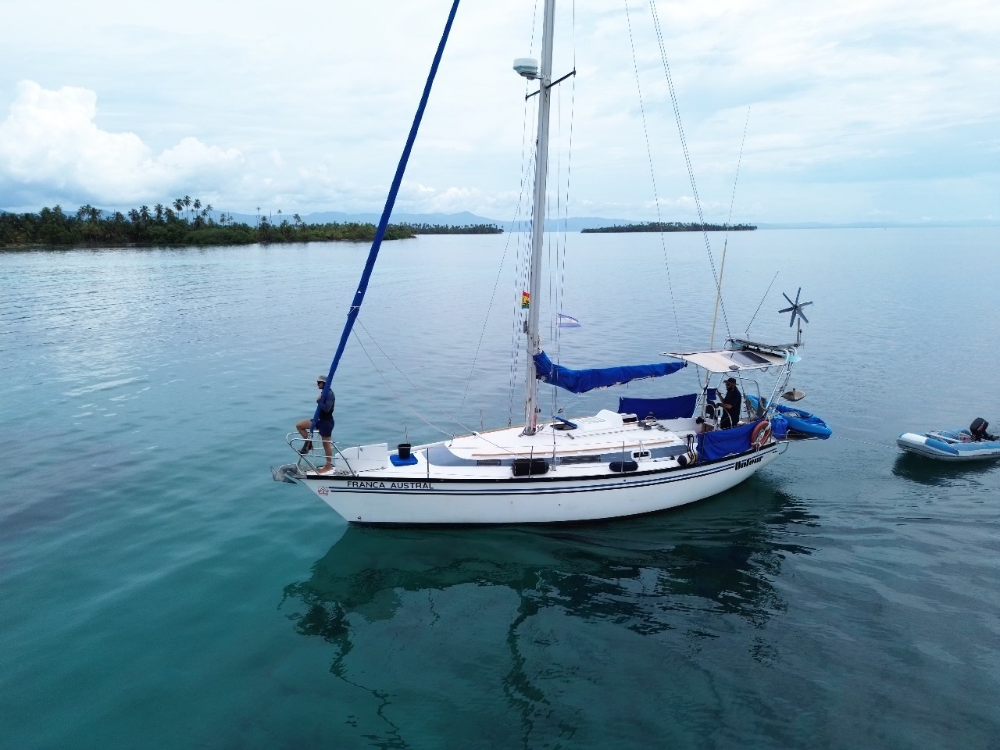
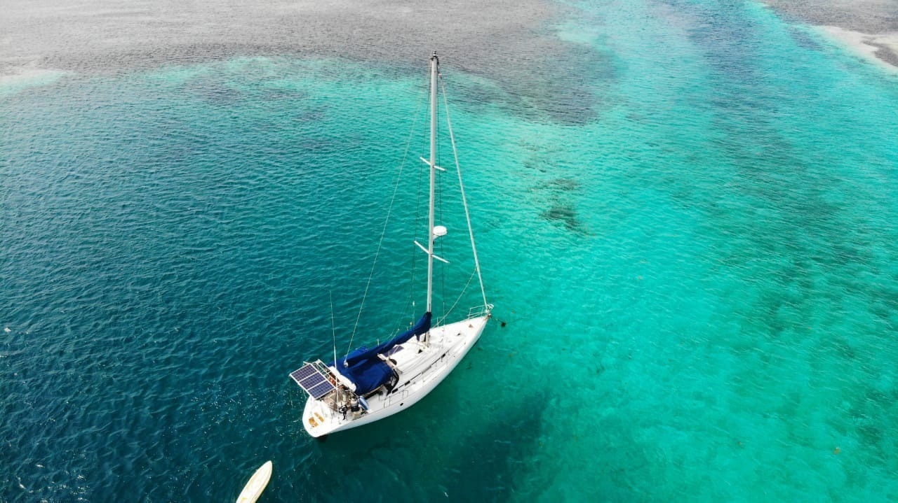
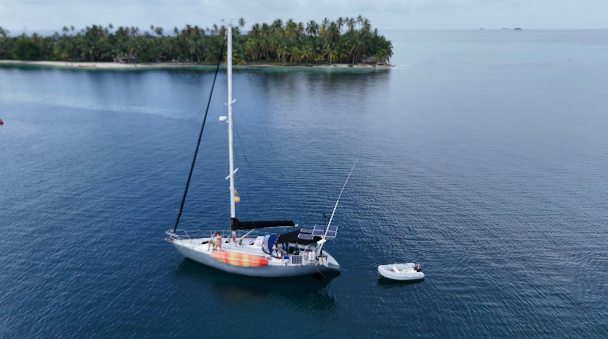
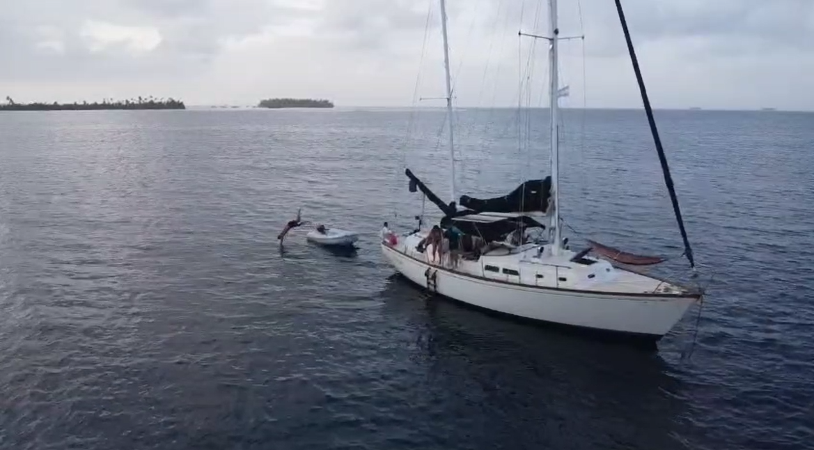
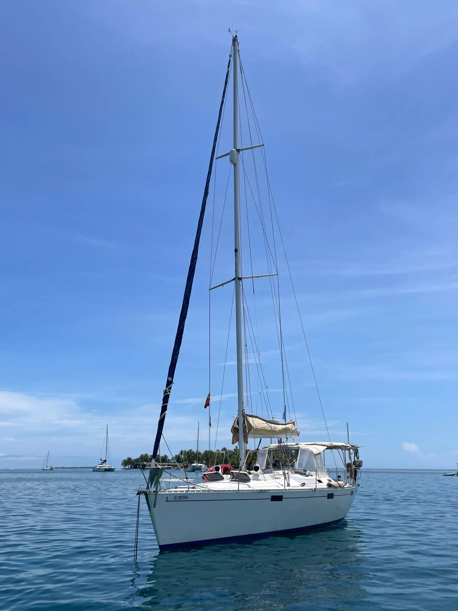

Let’s Sail Together
Join a growing network of marinas and sailing friends creating meaningful experiences at sea.
Join a growing network of marinas and sailing friends creating meaningful experiences at sea.
We believe sailing is more than a journey. It’s about freedom, connection and the stories lived on the water. We collaborate with marinas and sailboats that share a deep respect for the ocean and a passion for authentic nautical experiences.

A comfortable and practical sailboat, ideal for those who want to connect with the sea and nature. Hosted by two Argentine biologists who will guide you through the marine life and islands of San Blas.
👥 Up to 4 guests
🔒 Private sailboat
💰 From USD 450 per night
The sailboat Franca Austral is a smaller 35-foot Dufour 4800, perfect for a more intimate experience, accommodating up to 4 guests. Despite bnieing smaller than our main boat, the crew is fantastic, and the boat is never shared with other guests, ensuring complete privacy.
It features one cabin with a double bed, the main cabin with a double bed, one bathroom, a comfortable cockpit, a swim platform, and an outdoor shower.

Maluco is a comfortable and well-equipped sailboat, ideal for couples or families looking for a relaxed and authentic experience in San Blas, combining daily sailing, quiet islands, and a friendly atmosphere on board.
Cabins: -2 cabins availables Both with private toilet (ensuite)
Children policy:
👶 Up to 3 years old: free of charge
🧒 Up to 7 years old: 50% of the rate
Maluco is a great choice for families who want to share a unique sailing experience together, as well as for couples seeking comfort, calm waters, and a genuine connection with San Blas.

A charming and well-kept sailboat, perfect for couples seeking a relaxed and authentic experience in San Blas. With spacious areas to unwind, swim, and explore nearby islands, Moai is ideal for enjoying the sea at your own pace, whether privately or shared with other travelers.
Cabins: -2 cabins availables Both with private toilet (ensuite)
👥 Up to 4 guests
🔒 Private sailboat
Maluco is a great choice for families who want to share a unique sailing experience together, as well as for couples seeking comfort, calm waters, and a genuine connection with San Blas.

A more vintage and exclusive option, led by a highly experienced captain and offering exceptional comfort. Ideal for couples looking for privacy, tranquility, and a premium sailing experience.
👥 Up to 4 guests
🔒 Private boat
